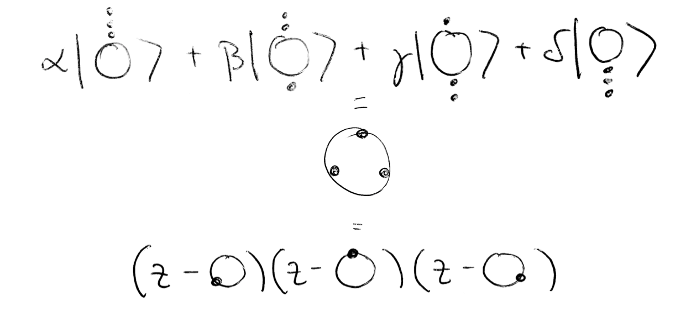
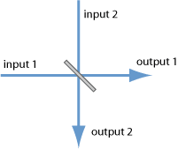
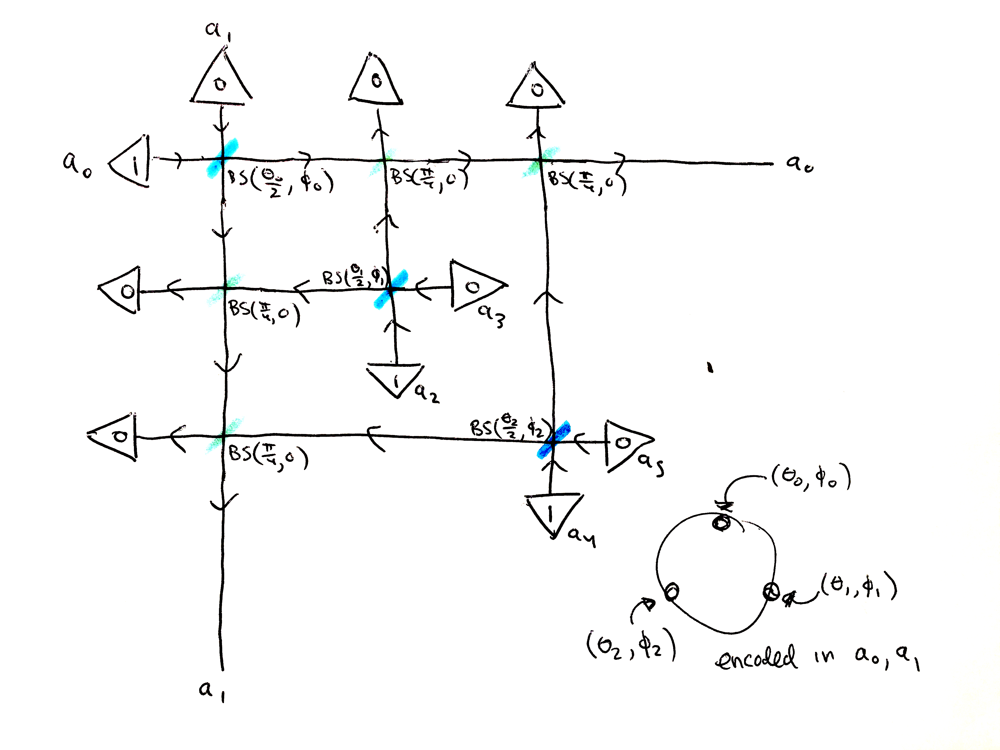

How To Prepare a Spin-j State on a Photonic Quantum Computer¶
By now we all know and love how a spin-j state can be decomposed into 2j “stars” on the sphere. We’ve used this decomposition to prepare spin-j states in the form of 2j permutation symmetric qubits on IBM’s quantum computer. Here we’ll see how we can use the same decomposition to prepare a spin-j state on a photonic quantum computer, in terms of oscillator modes.
For this, we’ll need to recall the “Schwinger oscillator” formulation of spin, which as we’ve seen can be thought of as the second quantization of a qubit. We introduce two harmonic oscillators for each basis state of a qubit (the fundamental, spin-\(\frac{1}{2}\) representation). This actually gives us all the higher spin representations for free. You can think of it like one oscillator counts the number of “\(\uparrow\)” quanta and one oscillator counts the number of “\(\downarrow\)” quanta. The resulting Fock space can be interpreted as describing a theory of a variable number of bosonic spin-\(\frac{1}{2}\) quanta (aka a theory of symmetric multiqubit states with different numbers of qubits), or more simply as a tower of spin states, one for each \(j\).
The easiest way to see this is to rearrange the Fock space of the two oscillators in the follow perspicacious form:
\(\{\mid 00 \rangle, \mid 10 \rangle, \mid 01 \rangle, \mid 20 \rangle, \mid 11 \rangle, \mid 02 \rangle, \mid 30 \rangle, \mid 21 \rangle, \mid 12 \rangle, \mid 03 \rangle, \dots \}\)
In other words, we can consider the subspaces with a fixed total number of quanta:
\(\{ \mid 00 \rangle \}\)
\(\{ \mid 10 \rangle, \mid 01 \rangle \}\)
\(\{ \mid 20 \rangle, \mid 11 \rangle, \mid 02 \rangle \}\)
\(\{ \mid 30 \rangle, \mid 21 \rangle, \mid 12 \rangle, \mid 03 \rangle \}\)
The first subspace is 1 dimensional, and corresponds to a spin-\(0\) state. The second subspace is 2 dimensional, and corresponds to a spin-\(\frac{1}{2}\) state. The third subspace is 3 dimensional, and corresponds to a spin-\(1\) state. The fourth subspace is 4 dimensional, and corresponds to a spin-\(\frac{3}{2}\) state. And so on.
In other words, say, for spin-\(\frac{3}{2}\), we have the correspondence:
\(\mid \frac{3}{2}, \frac{3}{2} \rangle \rightarrow \mid 30 \rangle\)
\(\mid \frac{3}{2}, \frac{1}{2} \rangle \rightarrow \mid 21 \rangle\)
\(\mid \frac{3}{2}, -\frac{1}{2} \rangle \rightarrow \mid 12 \rangle\)
\(\mid \frac{3}{2}, -\frac{3}{2} \rangle \rightarrow \mid 03 \rangle\)
And indeed, if we visualize these basis states, they correspond to: 3 stars at the North Pole; 2 stars at the North Pole, 1 star at the South Pole; 1 star at the North Pole, 2 stars at the South Pole; and 3 stars at the South Pole.
For comparison, here’s the same correspondence in terms of symmetric multiqubit states:
\(\mid \frac{3}{2}, \frac{3}{2}\rangle \rightarrow \ \mid \uparrow \uparrow \uparrow\rangle\)
\(\mid \frac{3}{2}, \frac{1}{2}\rangle \rightarrow \frac{1}{\sqrt{3}} \Big{(} \mid \uparrow \uparrow \downarrow\rangle + \mid \uparrow \downarrow \uparrow \rangle + \mid \downarrow \uparrow \uparrow \rangle \Big{)}\)
\(\mid \frac{3}{2}, -\frac{1}{2}\rangle \rightarrow \frac{1}{\sqrt{3}} \Big{(} \mid \downarrow \downarrow \uparrow \rangle + \mid \downarrow \uparrow \downarrow \rangle + \mid \uparrow \downarrow \downarrow \rangle \Big{)}\)
\(\mid \frac{3}{2}, -\frac{3}{2}\rangle \rightarrow \ \mid \downarrow \downarrow \downarrow \rangle\)
We can see the basis states correspond to a sum over all the states where \(n\) qubits are \(\uparrow\) and \(2j-n\) qubits are down. We can upgrade a spin-j state to the symmetric multiqubit representation by exploiting this correspondence between basis states, or by preparing 2j qubits pointed in the Majorana directions and taking the permutation symmetric tensor product.
The justification for doing this comes from considering the Majorana polynomial.
Given a spin state in the \(\mid j, m \rangle\) representation: $:nbsphinx-math:mid `:nbsphinx-math:psi :nbsphinx-math:rangle `=
$, we form a polynomial in a complex variable \(z\):
\(p(z) = \sum_{m=-j}^{m=j} (-1)^{j+m} \sqrt{\binom{2j}{j-m}} a_{j+m} z^{j-m}\)
Its roots, stereographically projected from the complex plane to the sphere, yield the constellation. And note if you lose a degree, you add a root at “infinity” (conventionally, the South Pole).
In other words:
By the fundamental theorem of algebra, a spin-j state factorizes into 2j pieces: clearly the product of the monomials is independent of the order of multiplication. This corresponds to the permutation symmetric tensor product of qubits, one for each star.
In a second quantization context, we can upgrade a first quantized operator \(\hat{O}\) to a second quantized operator \(\hat{\textbf{O}}\) in an intuitive way:
\(\hat{\textbf{O}} = \sum_{i, j} \hat{a}_{i}^{\dagger}O_{ij}\hat{a}_{j}\)
This can also be interpreting wedging the operator \(\hat{O}\) between a row vector of creation operators and a column vector of annihilation operators.
We can thus construct second quantized representations of the Pauli matrices, which are the generators of \(SU(2)\) rotations. Given two oscillators with annihilation operators \(\hat{a}_{0}\) and \(\hat{a}_{1}\):
\(\hat{\sigma_{X}} \rightarrow \hat{a}_{1}^{\dagger}\hat{a}_{0} + \hat{a}_{0}^{\dagger}\hat{a}_{1}\)
\(\hat{\sigma_{Y}} \rightarrow i(\hat{a}_{1}^{\dagger}\hat{a}_{0} - \hat{a}_{0}^{\dagger}\hat{a}_{1})\)
\(\hat{\sigma_{Z}} \rightarrow \hat{a}_{0}^{\dagger}\hat{a}_{0} - \hat{a}_{1}^{\dagger}\hat{a}_{1}\)
The resulting operators will be block diagonal in terms of the different spin sectors, and perform separate rotations in each sector.
We can also construct creation operators which add a “star.”
Specifically, given a spin-\(\frac{1}{2}\) state \(\begin{pmatrix}\alpha \\ \beta \end{pmatrix}\), we can upgrade it to the operator \(\alpha \hat{a}_{0}^{\dagger} + \beta \hat{a}_{1}^{\dagger}\).
Repeated applications of such star operators allow one to build up a constellation one star at a time. Another way of thinking about this is that we can build an operator which raises an entire constellation in the form of a polynomial in the creation and annihilation operators:
\((\alpha_{0} \hat{a}^{\dagger} + \beta_{0} \hat{b}^{\dagger})(\alpha_{1} \hat{a}^{\dagger} + \beta_{1} \hat{b}^{\dagger})(\alpha_{2} \hat{a}^{\dagger} + \beta_{2} \hat{b}^{\dagger})\dots\)
And this turns out to be the Majorana polynomial in disguise:
\(\sum_{m=-j}^{m=j} \sqrt{\binom{2j}{j-m}} a_{j+m} (\hat{a}^{\dagger})^{j-m}(\hat{b}^{\dagger})^{j+m}\)
Note the \((-1)^{j+m}\) factor dissapears. Why? Consider that if we have \(\alpha z + \beta = z + \frac{\beta}{\alpha} = 0\), we have a root at \(-\frac{\beta}{\alpha}\), and the \((-1)^{j+m}\) corrects for this negative sign. So we need the \((-1)^{j+m}\) when we’re converting from a spin state to a polynomial to get the correct results. But here we’re working directly with spin states, first and second quantized, so no need for the \((-1)^{j+m}\).
So that’s all well and good, we can “raise” a spin-j state from the vacuum of two harmonic oscillators using a special “constellation creation operator.” But how do we actually prepare such states in practice on a photonic quantum computer? We can’t just arbitrarily apply creation and annihilation operators–after all, they are neither Hermitian, nor unitary! We need a way of formulating this entirely in terms of what a photonic quantum computer gives us: the ability to start with a certain Fock state, the ability to apply unitary transformations, and the ability to make measurements (for example, photon number measurements).
Intuitively, what we need to do is prepare our 2j “single star” states separately and then somehow combine them together into a single constellation.
The first thing to realize is that we can perform \(SU(2)\) rotations with beamsplitters.
The beamsplitter gate can be written:
\(BS(\theta, \phi) = e^{\theta(e^{i\phi}\hat{a}_{0}\hat{a}_{1}^{\dagger} - e^{-i\phi}\hat{a}_{0}^{\dagger}\hat{a}_{1})}\)
Here \(\hat{a}_{0}\) and \(\hat{a}_{1}\) refer to two photonic modes. \(\theta\) is the transmittivity angle. Then the transmission amplitude is \(T=\cos{\theta}\). For \(\theta = \frac{\pi}{4}\), we have the 50/50 beamsplitter. \(\phi\) is the phase angle. The reflection amplitude is then \(r=e^{i\phi}\sin{\theta}\), and \(\phi=0\) gives the 50/50 beamsplitter.
Now suppose we have a star whose coordinates on the sphere are written in terms of spherical coordinates \(\theta, \phi\). If we start in the Fock state of two oscillators \(\mid 1 0 \rangle\), which corresponds to a single star at the North Pole, aka the \(\mid \uparrow \rangle\) state, then applying the beamsplitter \(BS(\frac{\theta}{2}, \phi)\) will rotate the star into the desired direction.
Let’s check it out with StrawberryFields!
[3]:
from spheres import *
import strawberryfields as sf
from strawberryfields.ops import *
star = qt.rand_ket(2)
theta, phi = spinor_sph(star)
prog = sf.Program(2)
with prog.context as q:
Fock(1) | q[0]
BSgate(theta/2, phi) | (q[0], q[1])
eng = sf.Engine("fock", backend_options={"cutoff_dim": 3})
state = eng.run(prog).state
print("qubit xyz: %s" % spinj_xyz(star))
print("oscillator xyz: %s" % spinj_xyz_strawberryfields(state))
qubit xyz: [-0.48754591 0.11075614 0.00566234]
oscillator xyz: [-0.48754591 0.11075614 0.00566234]
Here in order to calculate the \(X, Y, Z\) expectation values, we use a trick: refer to the notes on Gaussian Quantum Mechanics for more information. In short:
The idea is to take the Pauli matrices (divided by \(\frac{1}{8}\) actually, for normalization), and first upgrade them to the form: \(\textbf{H} = \begin{pmatrix} O & 0 \\ 0 & O^{*} \end{pmatrix}\), where \(O\) is the Pauli matrix, so that we can represent them in the general form for Gaussian operators (ignoring displacements):
Here \(\xi = \begin{pmatrix}\hat{a}_{0} \\ \hat{a}_{1} \\ \vdots \\ \hat{a}_{0}^{\dagger} \\ \hat{a}_{1}^{\dagger} \\ \vdots \end{pmatrix}\) is a vector of annihilation and creation operators.
The action of \(H\) can also be written:
Where \(S\) is a complex symplectic matrix: \(\textbf{S} = e^{-i\Omega_{c}\textbf{H}}\) and \(\Omega_{c} = \begin{pmatrix}I_{n} & 0 \\ 0 & -I_{n} \end{pmatrix}\), the complex symplectic form. (And actually, since we’re here only concerned with the Pauli matrices themselves, we don’t need to take the exponential.)
\(S\) can be converted into a real symplectic matrix acting on a vector of position and momentum operators, \(\begin{pmatrix} \hat{Q_{0}} \\ \hat{Q_{1}} \\ \hat{Q_{2}} \\ \vdots \\ \hat{P_{0}} \\ \hat{P_{1}} \\ \hat{P_{2}} \\ \vdots \end{pmatrix}\) via:
Where \(L = \frac{1}{\sqrt{2}}\begin{pmatrix} I_{n} & I_{n} \\ -iI_{n} & iI_{n} \end{pmatrix}\).
Once we have \(R\), we can feed it into StrawberryField’s method state.poly_quad_expectations, which calculates the expectation value for operators built out of position and momentum operators, to obtain \(\langle \hat{X} \rangle, \langle \hat{Y} \rangle, \langle \hat{Z} \rangle\). This is what the function sf_state_xyz does.
Okay, so we can load in a spin-\(\frac{1}{2}\) state. But how do we generalize this for any spin-\(j\)?
The idea is we’re going to use \(2j\) pairs of oscillators, one pair for each star. Each pair is going to begin in the \(\mid 10 \rangle\) state, aka the spin-\(\frac{1}{2}\) \(\mid \uparrow \rangle\) state, and we’ll use a beamsplitter on each pair to rotate them to point in the direction of one of the 2j stars of the constellation.
Then we’ll pick one pair of oscillators to be special: this is the pair we’re going to load our spin-\(j\) state into. Let’s call its modes \(a_{0}\) and \(a_{1}\). We’re going apply 50/50 beamsplitters to the first of each (other) pair and \(a_{0}\), and also 50/50 beamsplitters to the second of each (other) pair and \(a_{1}\). This combines the modes in an even-handed way. Then we’re going to post-select on all the other modes (that is, all the modes except \(a_{0}\) and \(a_{1}\)) having 0 photons. If none of those other modes have any photons after going through the 50/50 beamsplitters, then all the photons must have ended up in \(a_{0}\) and \(a_{1}\), and indeed: we find that \(a_{0}\) and \(a_{1}\) are then in the desired state, encoding the spin-\(j\) constellation.
There’s no getting around the post-selection, which is analogous to the post-selection necessary in the symmetric multiqubit circuit we discussed before. What’s nice in this case, however, is that the permutation symmetry itself is handled automatically for us, so no need for all those controlled swaps!
As a tabletop experiment, it might look something like this:
Depicted is a photonic preparation of a spin-\(\frac{3}{2}\) state. The state is determined (up to phase) by three stars given in spherical coordinates by \((\theta_{0}, \phi_{0}), (\theta_{1}, \phi_{1}), (\theta_{2}, \phi_{2})\). These values determine the parameters of the three beamsplitters in blue along the diagonal: \(BS(\frac{\theta_{0}}{2}, \phi_{0}), BS(\frac{\theta_{1}}{2}, \phi_{1}), BS(\frac{\theta_{2}}{2}, \phi_{2})\). On the other hand, the green beamsplitters are 50/50 beamsplitters: \(BS(\frac{\pi}{4}, 0)\). Each pair of modes (\(a_{0}/a_{1}\), \(a_{2}/a_{3}\), \(a_{4}/a_{5}\)) starts off in the \(\mid 10 \rangle\) state, and each pair is sent through a corresponding beamsplitter to rotate in a star. Then all the even numbered modes (if you like) are 50/50’d with \(a_{0}\), and all the odd numbered modes are 50/50’d with \(a_{1}\). Then \(a_{2}, a_{3}, a_{4}, a_{5}\) are all sent into photon detectors, and we throw out the experiment unless all the photon counts are 0. Then the spin-\(\frac{3}{2}\) state given by the three stars will be encoded in the two modes \(a_{0}\) and \(a_{1}\). One can then easily imagine the corresponding diagram for any spin-\(j\): just add more blue beamsplitters corresponding to stars along the diagonal, etc.
In StrawberryFields code:
[4]:
from spheres import *
import strawberryfields as sf
from strawberryfields.ops import *
spin = qt.rand_ket(4)
sph = [np.array([theta_phi[0]/2, theta_phi[1]]) for theta_phi in spin_sph(spin)]
j = (spin.shape[0]-1)/2
n_modes = 2*int(2*j)
cutoff_dim = int(2*j+1)
prog = sf.Program(n_modes)
with prog.context as q:
for i in range(0, n_modes-1, 2):
Fock(1) | q[i]
theta, phi = sph[int(i/2)]
BSgate(theta, phi) | (q[i], q[i+1])
for i in range(2, n_modes-1, 2):
BSgate() | (q[0], q[i])
BSgate() | (q[1], q[i+1])
for i in range(2, n_modes):
MeasureFock(select=0) | q[i]
eng = sf.Engine("fock", backend_options={"cutoff_dim": cutoff_dim})
state = eng.run(prog).state
Let’s confirm that our expected spin axis is correct:
[5]:
print("spin xyz: %s" % spinj_xyz(spin))
print("oscillator xyz: %s" % spinj_xyz_strawberryfields(state))
spin xyz: [-0.3972139 0.59242125 0.08100696]
oscillator xyz: [-0.3972139 0.59242125 0.08100696]
And that we get the correct probabilities:
[7]:
print("correct probabilities:")
dirac(spin_osc(spin, cutoff_dim=cutoff_dim), probabilities=True)
print("\nsf probabilities:")
fock_probs = {}
for i in range(cutoff_dim):
for j in range(cutoff_dim):
fock_state = [i, j]+[0]*(n_modes-2)
fock_probs[(i, j)] = state.fock_prob(n=fock_state)
if fock_probs[(i, j)] != 0:
print("|%s%s>: %.3f" % (i, j, fock_probs[(i, j)]))
correct probabilities:
|03>: 0.132
|12>: 0.315
|21>: 0.393
|30>: 0.160
sf probabilities:
|03>: 0.132
|12>: 0.315
|21>: 0.393
|30>: 0.160
spheres.spin_circuits.strawberryfields provides the function spin_osc_strawberryfields(spin), which takes a spin as input and returns the StrawberryField program above, as well as spinj_xyz_strawberryfields(state, on_modes=[0,1]) which takes a StrawberryFields state and a list of two modes for which to calculate the \(X\), \(Y\), \(Z\) expectation values.
And there you have it! Now all you need is access to a real photonic quantum computer and the sky’s the limit.